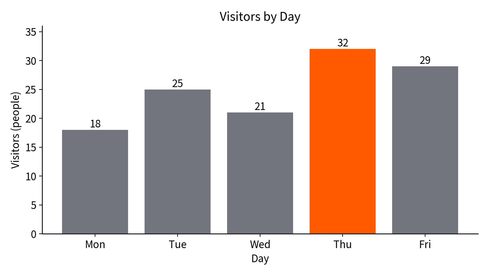
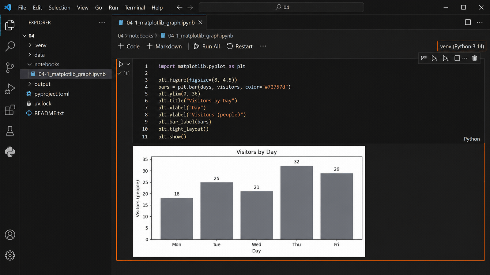
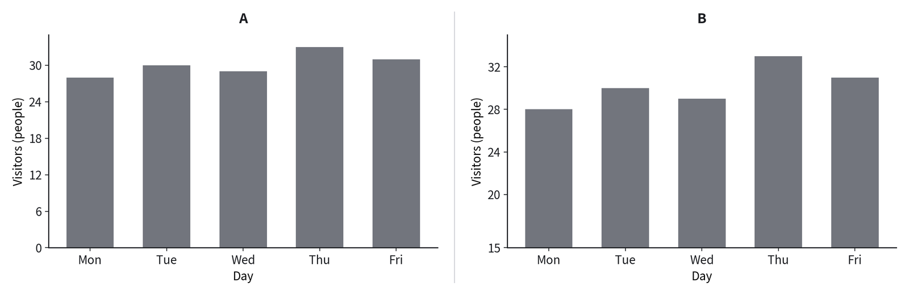
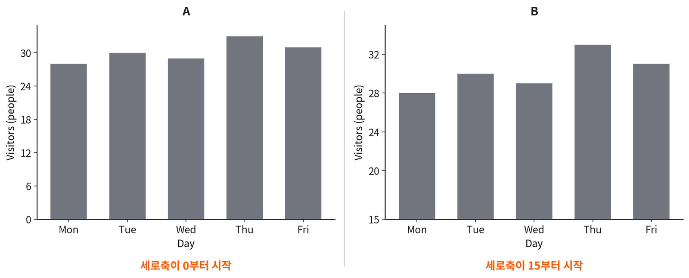
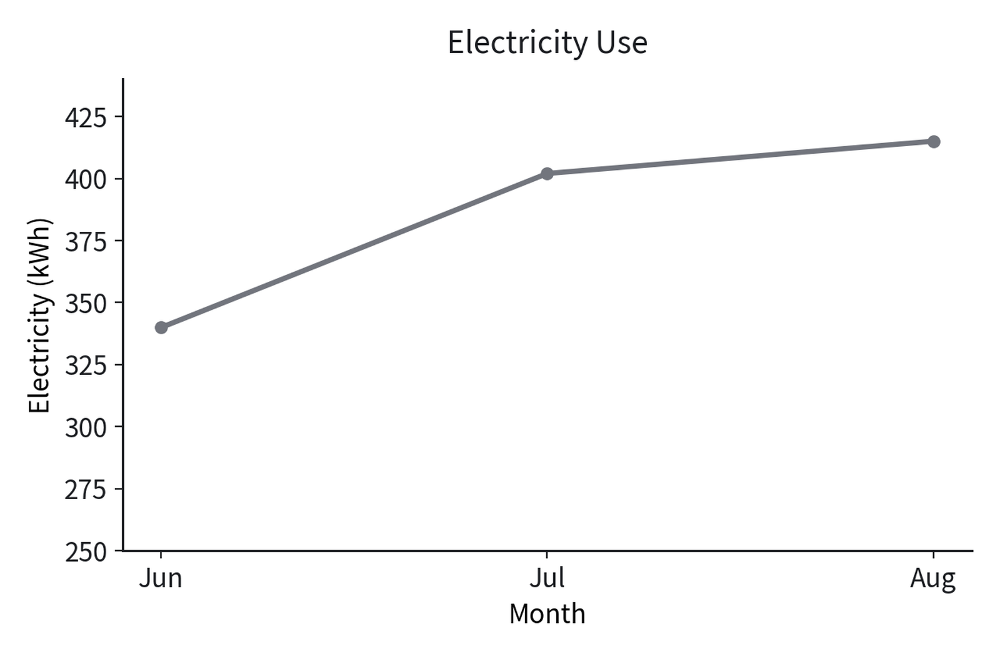
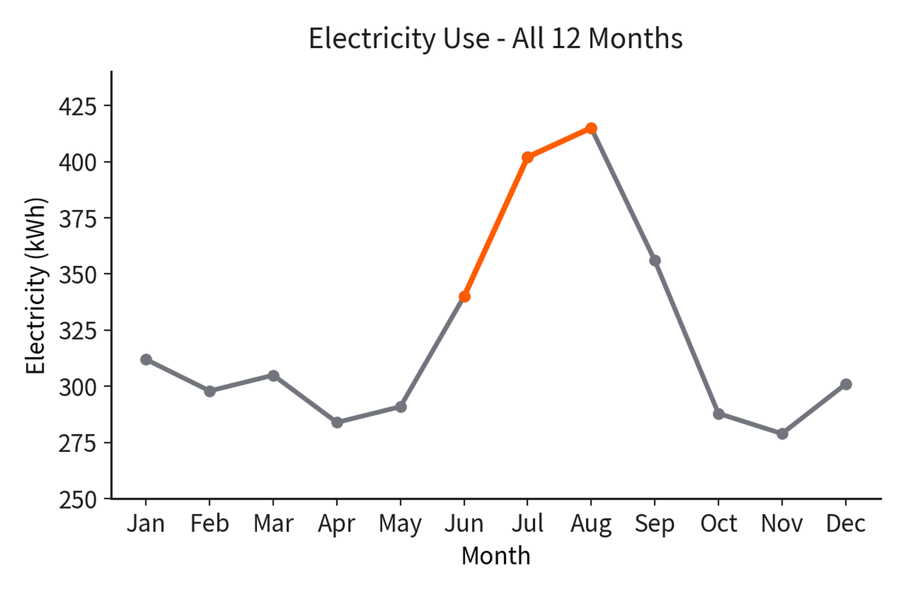

Matplotlib으로 그래프 이해하기 用 Matplotlib 理解图表
이번 차시 폴더를 받아 연다下载并打开本课时文件夹 실습实践
3주차에 03 폴더를 만들었듯이, 이번에는 04 폴더를 씁니다. 아래 버튼으로 받습니다.就像 3 周次建了 03 文件夹一样，这次用 04 文件夹。用下面的按钮下载。
04 폴더가 나옵니다. JDH_VibeCoding_자기이름 안에 넣습니다.解压后会出现 04 文件夹，把它放进 JDH_VibeCoding_自己的名字 里。- 압축을 풀어 나온
04폴더를JDH_VibeCoding_자기이름안에 넣는다.把解压得到的04文件夹放进JDH_VibeCoding_自己的名字里。 - 그
04폴더를 통째로 VS Code로 연다. 파일 하나만 열지 않는다.把这个04文件夹整个用 VS Code 打开。不要只打开一个文件。 - 터미널에
uv sync를 실행한다..venv가 생긴다.在终端运行uv sync，会生成.venv。 - Notebook을 열고 오른쪽 위에서 이 폴더의
.venv를 커널로 고른다.打开 Notebook，在右上角选择本文件夹的.venv作为内核。
여기까지는 3주차에 한 것과 똑같습니다. 폴더 이름만 03에서 04로 바뀌었습니다. 커널 목록에 .venv가 안 보이면 교과서 03-1의 15쪽을 봅니다.到这里为止和 3 周次完全一样，只是文件夹名从 03 变成 04。如果内核列表里没有 .venv，请看教材 03-1 第 15 页。
그래도 Notebook이 안 열리면 code 폴더의 파일을 대신 실행합니다. 배우는 것은 똑같고, 그래프가 별도 창으로 뜨는 것만 다릅니다.如果 Notebook 仍然打不开，就改为运行 code 文件夹里的文件。学的内容完全一样，只是图表会另开一个窗口显示。
같은 자료를 두 가지로 본다同一份资料的两种看法 핵심核心
아래 표와 그래프는 같은 자료입니다. 담긴 숫자가 하나도 다르지 않습니다.下面的表格和图表是同一份资料，数字完全相同。
| 요일星期 | 이용 인원使用人数 |
|---|---|
| Mon | 18 |
| Tue | 25 |
| Wed | 21 |
| Thu | 32 |
| Fri | 29 |

질문에 따라 편한 쪽이 다르다问题不同，方便的一方也不同 핵심核心
앞의 표와 그래프를 보고 두 질문에 답해 보세요. 어느 쪽을 보고 답했습니까?看着前面的表格和图表回答两个问题。你是看哪一个回答的？
| 질문问题 | 표表格 | 그래프图表 |
|---|---|---|
| 수요일은 정확히 몇 명인가?星期三正好是多少人？ | 21이라고 바로 읽힌다直接读到 21 | 눈금을 재야 한다要对着刻度看 |
| 가장 많은 날은 언제인가?最多的是哪天？ | 다섯 줄을 비교해야 한다要比较五行 | 한눈에 보인다一眼就能看到 |
표는 정확한 값에 강하고, 그래프는 크기와 변화의 모양에 강합니다. 어느 쪽이 더 좋은 것이 아니라 묻는 것이 다릅니다.表格擅长精确的数值，图表擅长大小和变化的形状。不是哪一个更好，而是所问的东西不同。
그래프를 그리려는데 멈춘다想画图表却停下来 실습实践
이제 그래프를 직접 그려 봅니다. Notebook의 그리기 셀을 실행하면 오류가 납니다. 정상입니다.现在自己来画图表。运行 Notebook 的绘图单元格会报错，这是正常的。
import matplotlib.pyplot as plt
ModuleNotFoundError: No module named 'matplotlib'
| 보이는 말看到的话 | 뜻意思 |
|---|---|
ModuleNotFoundError | 도구를 찾지 못했다找不到工具 |
No module named | 그런 이름의 도구가 이 폴더에 없다这个文件夹里没有这个名字的工具 |
코드가 틀린 것이 아닙니다. 쓸 도구를 아직 안 가져온 것입니다. 3-2에서 본 IndexError처럼, 오류 문장은 어디가 막혔는지 알려 줍니다.不是代码写错了，而是还没把要用的工具拿过来。就像 3-2 看过的 IndexError 一样，错误信息告诉我们卡在哪里。
라이브러리는 이미 만들어진 기능의 묶음이다库是已经做好的功能的集合 핵심核心
그래프를 그리는 코드를 우리가 처음부터 쓸 수도 있습니다. 하지만 이미 잘 만들어 둔 것이 있습니다.画图表的代码我们也可以从头写，但已经有人做得很好了。
필요한 것을 이 폴더로 가져온다把需要的东西拿进这个文件夹 실습实践
터미널에 아래 한 줄을 칩니다. 3-1에서 uv sync를 쳤던 그 자리입니다.在终端输入下面一行。就是 3-1 输入 uv sync 的那个位置。
uv add matplotlib
- Notebook 위쪽의 다시 시작을 누른다. 커널이 새 도구를 알아보게 하기 위해서다.点击 Notebook 上方的重启，让内核认识新工具。
- 아까 오류가 났던 셀을 다시 실행한다.重新运行刚才报错的单元格。
- 이번에는 오류 없이 지나간다.这次不会报错。
uv add는 이 폴더에 도구를 챙겨 넣는 명령이고, import는 코드에서 그 도구를 불러오는 것입니다. 서로 다른 일입니다. 챙겨 넣지 않고 부르면 아까처럼 멈춥니다.uv add 是把工具装进这个文件夹的命令，import 是在代码里调用那个工具。是两件事。没装就调用，就会像刚才那样停下。
같은 코드가 이번에는 된다同样的代码这次可以了 실습实践
코드는 한 글자도 고치지 않았습니다. 달라진 것은 도구가 이 폴더에 들어왔다는 것뿐입니다.代码一个字都没改。变的只是工具进到了这个文件夹。
import matplotlib.pyplot as plt
plt.figure(figsize=(8, 4.5))
bars = plt.bar(days, visitors, color="#72757d")
plt.ylim(0, 36)
plt.title("Visitors by Day")
plt.xlabel("Day")
plt.ylabel("Visitors (people)")
plt.bar_label(bars)
plt.tight_layout()
plt.show()그래프 안의 글자는 영문으로 씁니다. 학교 컴퓨터의 그리기 도구에는 한글 글꼴이 들어 있지 않아, 한글로 쓰면 네모(□□□)로 나옵니다. 한글 설명은 그래프 밖에 적습니다.图表里的文字用英文。学校电脑的绘图工具没有内置韩文字体，写韩文会显示成方块（□□□）。韩文说明写在图表外面。
코드 바로 아래에 그래프가 나온다图表出现在代码正下方 실습实践

알고 싶은 것에 따라 모양이 달라진다想知道什么，形状就不同
그래프에는 여러 모양이 있습니다. 외울 필요는 없습니다. 무엇을 알고 싶은지가 모양을 정합니다.图表有很多形状，不用背。想知道什么决定了用哪种形状。
| 알고 싶은 것想知道的 | 쓰는 모양用的形状 | 예例 |
|---|---|---|
| 항목끼리 크기 비교各项目之间比大小 | 막대柱状图 | 요일별 이용 인원每天的使用人数 |
| 시간에 따른 변화随时间的变化 | 선折线图 | 월별 전기 사용량每月用电量 |
| 두 값의 관계两个值的关系 | 점散点图 | 공부 시간과 점수学习时间与分数 |
오늘 수행평가 준비에서 쓰는 것은 막대입니다. 다음 주 수행평가에서도 모양은 선생님이 지정합니다. 학생이 고르지 않습니다.今天为下周评价做准备时用的是柱状图。下周的评价中形状也由老师指定，学生不用选。
요청에는 완료 조건까지 담는다请求里要写清完成条件 핵심核心
AI에게 그래프를 부탁할 때 "그래프 그려 줘"라고만 하면 원하는 것이 안 나옵니다. 무엇을·어떻게·어디까지를 적습니다.让 AI 画图表时只说“画个图”是不行的。要写清什么、怎么画、到什么程度。
요일별 이용 인원을 막대그래프로 그려 줘. - 가로축은 요일, 세로축은 이용 인원(명) - 세로축은 0에서 시작 - 제목과 축 이름을 넣고, 글자는 영문으로 - 막대 위에 값을 표시
| 적은 것写的内容 | 왜 적었나为什么写 |
|---|---|
| 가로축·세로축横轴·纵轴 | 무엇을 어디에 둘지 정해 준다指定什么放在哪里 |
| 세로축은 0에서 시작纵轴从 0 开始 | 뒤에서 볼 축 장난을 막는다防止后面要看的坐标轴把戏 |
| 글자는 영문文字用英文 | 한글이 네모로 나오는 것을 막는다防止韩文变成方块 |
| 막대 위에 값柱子上标数值 | 원본과 대조하기 쉽게 한다方便和原始数据核对 |
그래프가 나왔다고 맞는 것은 아니다出现图表不等于正确 핵심核心
AI가 만든 그래프는 그럴듯하게 나옵니다. 그럴듯한 것과 맞는 것은 다릅니다. 원본과 하나씩 맞춰 봅니다.AI 做出来的图表看起来像模像样。像样和正确是两回事。要和原始数据一项项核对。
| 확인할 것要确认的 | 원본原始数据 |
|---|---|
| 막대 개수柱子数量 | 5개5 个 |
| 각 막대 값每根柱子的值 | 18 · 25 · 21 · 32 · 2918 · 25 · 21 · 32 · 29 |
| 가장 높은 날最高的一天 | ThuThu |
| 세로축 시작纵轴起点 | 00 |
| 제목 · 축 이름 · 단위标题 · 轴名 · 单位 | 모두 있음都有 |
한 줄이라도 안 맞으면 그래프가 아니라 요청문을 고칩니다. 그림을 손으로 고치면 다음에 또 같은 일이 생깁니다.只要有一项对不上，就改请求文而不是改图。用手改图的话，下次还会出同样的问题。
어느 쪽이 더 크게 늘었을까?哪边增长得更多？ 핵심核心
아래 두 그래프를 봅니다. 앞에서 본 것과 다른 주의 자료입니다. 먼저 답부터 생각해 보세요. 목요일이 다른 날보다 얼마나 많아 보입니까?看下面两个图表。这是与前面不同的另一周的数据。先想想答案。星期四看起来比别的日子多多少？

두 그래프의 값은 똑같다两个图表的数值完全相同 핵심核心
놀랍게도 두 그래프에 담긴 숫자는 하나도 다르지 않습니다. 표로 확인해 보세요.令人意外的是，两个图表里的数字完全相同。用表格确认一下。
| 요일星期 | AA | BB |
|---|---|---|
| Mon | 28 | 28 |
| Tue | 30 | 30 |
| Wed | 29 | 29 |
| Thu | 33 | 33 |
| Fri | 31 | 31 |
그런데 B가 훨씬 극적으로 보입니다. 무엇이 다른 걸까요? 답을 말하기 전에 두 그래프를 한 번 더 보세요. 다른 곳은 딱 한 군데입니다.但 B 看起来戏剧性得多。到底哪里不一样？说答案之前再看一次两个图表。不同的地方只有一处。
다른 것은 세로축 시작점 하나뿐이다不同的只有纵轴的起点 핵심核心
답을 밝힙니다. 두 그래프의 다른 곳은 딱 한 군데였습니다.揭晓答案。两个图表不同的地方只有一处。

아래를 자르면 차이가 커 보인다切掉下面，差异就显得大 핵심核心
막대의 높이 차이가 눈에 들어옵니다. 아래를 잘라 내면 남은 부분에서 차이가 차지하는 비중이 커집니다.人眼看的是柱子的高度差。切掉下面之后，差异在剩下部分里所占的比重变大了。
| A · 0부터A · 从 0 | B · 15부터B · 从 15 | |
|---|---|---|
| Mon과 Thu의 실제 차이Mon 与 Thu 的实际差 | 5명 | 5명 |
| 눈에 보이는 높이 차이看到的高度差 | 조금一点点 | 거의 두 배几乎两倍 |
B가 거짓말을 한 것은 아닙니다. 숫자는 정확합니다. 다만 보는 사람이 다르게 받아들이게 만들었습니다. 그래서 그래프를 볼 때는 축을 먼저 봅니다.B 并没有说谎，数字是准确的。只是让看的人产生了不同的感受。所以看图表时要先看坐标轴。
두 그래프를 판정한다判定两个图表 실습实践
앞의 두 그래프 A·B를 보고 여섯 칸을 채웁니다. 손으로 적습니다.看着前面的两个图表 A·B 填写六栏。用手写。
| # | 묻는 것问题 | A | B |
|---|---|---|---|
| 1 | Mon은 몇 명인가?Mon 是多少人？ | ||
| 2 | 가장 많은 날은?最多的是哪天？ | ||
| 3 | 세로축은 어디서 시작하나?纵轴从哪里开始？ | ||
| 4 | Thu가 Mon보다 몇 명 많은가?Thu 比 Mon 多几人？ | ||
| 5 | Thu가 Mon보다 몇 배로 보이나?Thu 看起来是 Mon 的几倍？ | ||
| 6 | 숫자를 정확히 전하려면 어느 쪽?要准确传达数字用哪个？ |
- 네 번째 칸과 다섯 번째 칸의 답이 다른 이유를 한 줄로 적었다.写下第四栏和第五栏答案不同的原因。
- 어느 쪽이 정확한지 이유와 함께 적었다.写下哪个更准确以及理由。
자른 것은 축만이 아니다被切掉的不只是坐标轴 핵심核心
축 말고도 자를 수 있는 것이 있습니다. 기간입니다. 아래 선그래프를 보세요.除了坐标轴，还有可以切掉的东西 — 时期。看下面的折线图。

전체를 보면 다른 이야기가 된다看全部就是另一回事 핵심核心

앞 그림도 거짓 숫자를 쓰지 않았습니다. 그 세 달은 실제로 올랐습니다. 다만 보여 주지 않은 아홉 달이 있었습니다.前一张图也没有用假数字。那三个月确实上升了。只是有九个月没有给你看。
자른 것은 축만이 아니다被切掉的不只是坐标轴 실습实践
두 문항을 읽고 답을 문장으로 적습니다. 정답을 맞히는 것이 아니라 이유를 적는 활동입니다.读两道题，用句子写下答案。这不是猜正确答案，而是写出理由的活动。
| # | 묻는 것问题 | 내가 적는 답我写的答案 |
|---|---|---|
| 1 | 앞의 두 선그래프는 같은 자료다. 그런데 왜 다른 이야기로 읽히는가?前面两个折线图是同一份资料，为什么读起来是不同的故事？ | |
| 2 | 누군가 “여름에 전기를 점점 더 쓴다”며 3개월 그래프만 보여 준다면, 무엇을 물어봐야 하는가?如果有人只给你看 3 个月的图并说“夏天用电越来越多”，你该问什么？ |
- 두 답에 기간이라는 말이 들어갔다.两个答案里都出现了时期这个词。
- 그래프를 볼 때 확인할 것을 스스로 한 가지 더 적었다.自己再写出一个看图表时要确认的项目。
그래프를 볼 때 먼저 보는 네 가지看图表时先看的四件事 핵심核心
| 보는 것看什么 | 왜为什么 |
|---|---|
| 축이 어디서 시작하나坐标轴从哪里开始 | 아래를 자르면 차이가 커 보인다切掉下面，差异会显得大 |
| 기간이 얼마나 되나时期有多长 | 일부만 고르면 다른 이야기가 된다只选一部分就成了另一个故事 |
| 단위가 무엇인가单位是什么 | 명인지 %인지에 따라 뜻이 다르다是人数还是百分比，意思完全不同 |
| 출처가 어디인가来源是哪里 | 누가 언제 잰 값인지 알아야 한다要知道是谁、什么时候测的 |
이 과목은 수학·데이터 분석 과목이 아닙니다. 깊은 통계 해석보다 요구한 그래프를 정확히 만들고 원본과 대조하는 것이 먼저입니다.本课不是数学或数据分析课。比起深入的统计解释，按要求准确完成图表并与原始数据核对更重要。
오늘 남길 것今天要留下的
- 라이브러리는 이미 만들어진 기능의 묶음이다.库是已经做好的功能的集合。
uv add는 이 폴더에 도구를 챙겨 넣고,import는 코드에서 그것을 부른다. 다른 일이다.uv add把工具装进这个文件夹，import在代码里调用它。是两件事。- 그래프가 나왔다고 맞는 것이 아니다. 원본과 대조해야 맞는 것이다.出现图表不等于正确，要和原始数据核对才算正确。
- 같은 숫자도 축과 기간에 따라 다른 인상을 준다.同样的数字，因坐标轴和时期不同会给人不同印象。
오늘 채운 워크시트는 JDH_VibeCoding_자기이름 안 04 폴더에 남깁니다. 다음 시간 수행평가에서 같은 확인을 직접 하게 됩니다.今天填写的练习纸留在 JDH_VibeCoding_自己的名字 里的 04 文件夹。下节课的评价中要自己做同样的确认。
다음에는 표를 다루는 도구를 가져옵니다. 3-2에서 만든 이름표 묶음이 표로 펴지는 것을 봅니다.下次要拿来处理表格的工具。会看到 3-2 做的名牌集合展开成表格。